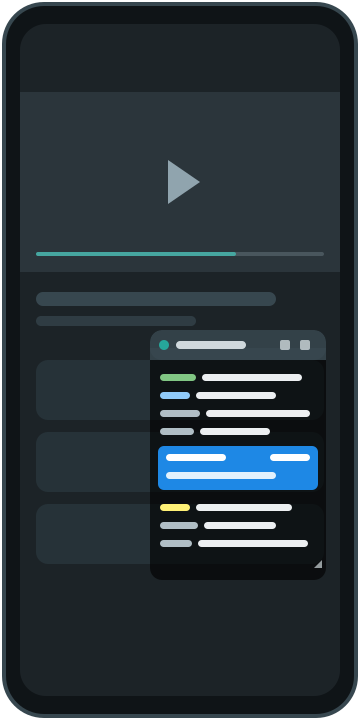
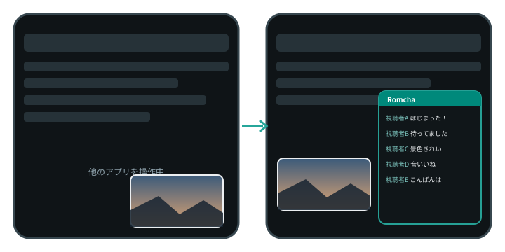
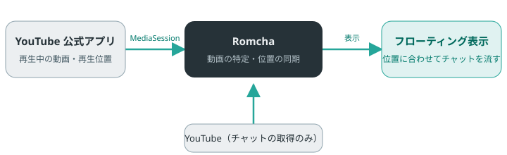

Romcha
見るだけの
チャットビューワー
YouTube の小窓（フローティング）ではチャットが見えなくなるので、チャットのほうを小さなウィンドウで浮かべます。 再生位置を自動で読み取り、アーカイブのチャットを当時のタイミングで流します。

作った理由
YouTube の小窓（フローティング）では、チャットが見えなくなります。
YouTube 公式アプリは動画を小窓にして他のアプリを使えますが、小窓にするとチャット（コメント）が表示されません。 小窓で動画を流したままチャットも追いたい、つまりフローティングに対応したチャットビューワーが欲しい、 というのが Romcha を作った動機です。公式アプリの再生位置を読み取り、チャットを別のフローティングウィンドウへ 同期して表示します。

機能
コメントの投稿などの書き込み機能は持たない、閲覧専用のアプリです（ROM＝Read Only Member）。
-
同期
再生位置に合わせて流れる
公式アプリの再生・一時停止・シーク・再生速度に追従し、アーカイブのチャットを当時のタイミングで表示します。
-
自動特定
見ている動画を自動で特定
再生中の動画をタイトル・チャンネル名・長さから特定します。公式アプリの「共有」や URL の入力でも指定できます。
-
ライブ
ライブ・プレミアにも対応
配信中・待機中は最新のチャットを追従し、表示の遅延も設定できます。終了後はリプレイの同期表示へ切り替えます。
-
ウィンドウ
邪魔にならない小窓
移動・サイズ変更・透過度・最小化・画面端への退避、タッチ透過で下の公式アプリも操作できます。
-
表示
読みやすさを調整
文字サイズ、投稿者名・アイコン・時刻、NG ワードや種別での絞り込み、ライト／ダークのテーマ、絵文字画像の表示、ヘッダーのボタンの大きさの切り替え（36dp／48dp）。
-
補正
ずれたら手で直せる
表示タイミングの手動補正（±10 秒）と、再生位置が取れない時の手動タイマーを備えています。
仕組み
再生位置は端末の中で読み取り、YouTube へはチャットの取得だけを行います。

使い方
初回だけ権限を許可すれば、あとは公式アプリで動画を再生するだけです。
- アプリを開き、案内に従って「他のアプリの上に重ねて表示」「通知へのアクセス」「通知の表示」を許可します（すべて許可済みなら案内は 1 行にまとまります）。
- 「フローティング表示を開始」を押し、YouTube 公式アプリでアーカイブやライブを再生します。
- チャットが小窓に流れます。ヘッダーをドラッグで移動、右下のつまみで大きさを変えられます。
- 特定できないときは、公式アプリの「共有」で Romcha を選ぶか、URL を入力して開きます。
プライバシーと注意
ログイン機能、広告・利用状況の解析の SDK はありません（クラッシュ情報の送信のみ）。
- 「通知へのアクセス」は再生位置を読むための Android の仕組み上の権限で、通知の内容は読みません。
- 通信先は YouTube（チャットの取得・画像）と、「更新を確認」を押した時の GitHub API と、クラッシュ情報の送信先（Google の Firebase Crashlytics）だけです。
- クラッシュ情報は、アプリが異常終了した時にだけ送ります。内容はエラーの内容（スタックトレース）・アプリの版・Android の版・端末の機種・ 匿名のインストール識別子で、チャットの内容や動画の URL は送りません。既定でオンで、HOME 画面の 「クラッシュ情報の送信」のスイッチでいつでもオフにできます。
- 設定と動画の特定結果は端末内にのみ保存し、バックアップの対象外にしています。
本アプリは非公式のアプリで、YouTube および Google とは関係ありません。チャットの取得には公開されていない方法 （YouTube の Web 版が内部で使う通信）を使っているため、仕様の変更により予告なく動かなくなることがあります。 自己の判断と責任で利用してください。